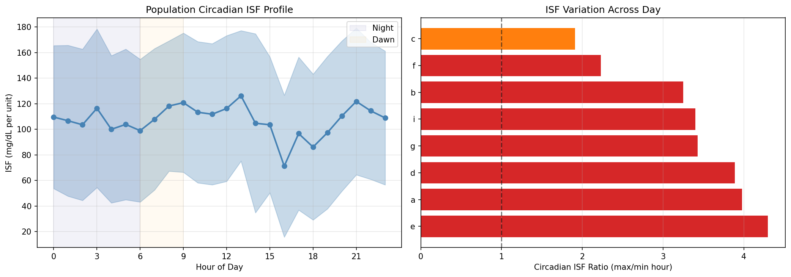
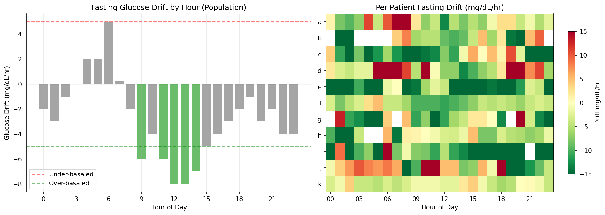
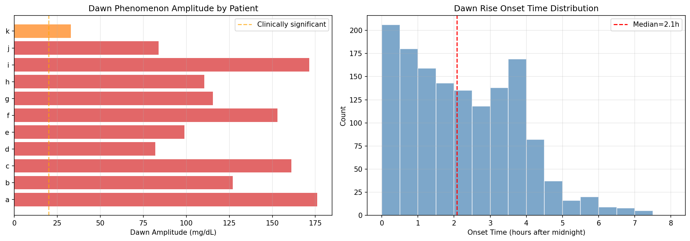
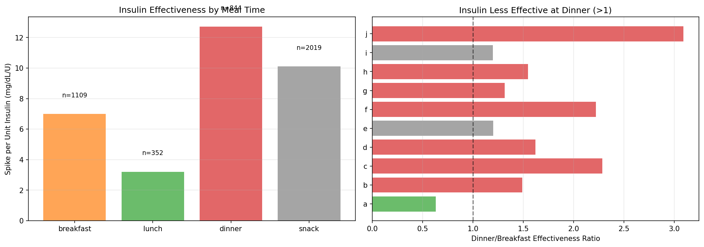
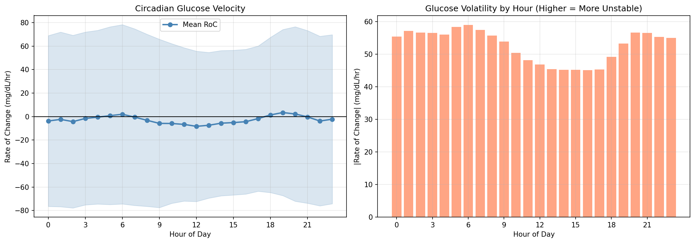
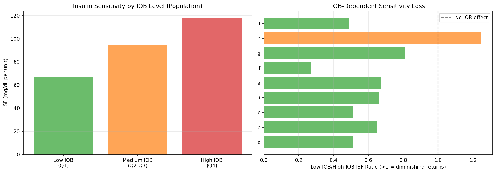
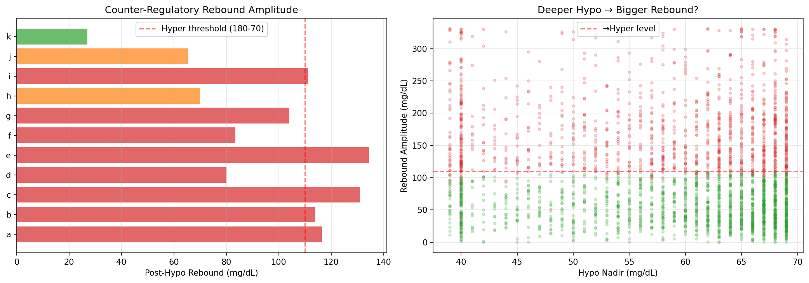
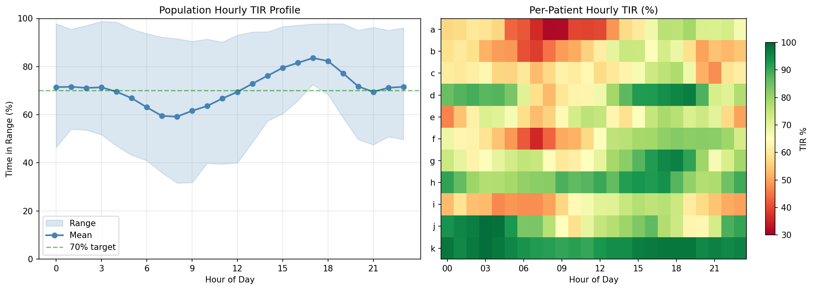

Circadian Therapy Profiling Report¶
Record
Record as of 2026-04-10. A point-in-time document; it is not kept up to date.
Experiments: EXP-2051–2058
Date: 2026-04-10
Population: 11 patients, ~180 days each
Script: tools/cgmencode/exp_circadian_2051.py
Status: AI-generated analysis — findings require clinical validation
Executive Summary¶
This batch quantifies how insulin sensitivity, basal needs, and glucose dynamics change across the 24-hour cycle. The central finding is a dramatic circadian swing: population TIR ranges from 59% at 8am to 84% at 5pm — a 25 percentage point gap that dwarfs most other optimization opportunities. Morning is universally the worst period, not because of dawn phenomenon alone, but because of a convergence of factors: rising glucose velocity, lowest ISF of the day (at 4pm, not morning), post-breakfast spikes, and accumulated overnight drift. Counter-regulatory rebounds after hypos send glucose above 180 in 42% of events, making hypo-then-hyper the dominant failure mode.
Key Numbers¶
| Metric | Value | Implication |
|---|---|---|
| Circadian ISF ratio | 2–4× within-day | ISF varies enormously by hour |
| Population ISF nadir | 4pm (71 mg/dL/U) | Afternoon insulin least effective |
| Population ISF peak | 1pm (126 mg/dL/U) | Early afternoon most effective |
| Dawn amplitude | 116 mg/dL median | Measuring nadir-to-peak, not just 4–7am |
| Dawn onset | 2.1h after midnight | Starts much earlier than textbook 4am |
| Dinner/breakfast ISF | 1.9× worse at dinner | Same carbs spike nearly 2× more at dinner |
| Fasting drift 6am | +5 mg/dL/hr | Only hour with significant upward drift |
| IOB→ISF correlation | r = +0.27 population | Higher IOB → HIGHER apparent ISF (paradox) |
| Post-hypo rebound | 89 mg/dL median | Counter-regulatory overshoot |
| Rebound → hyper | 42% of events | Nearly half of hypos cause subsequent hyper |
| TIR worst hour | 8am (59%) | Morning is the universal problem |
| TIR best hour | 5pm (84%) | Late afternoon is the universal success |
| Problem hours per patient | 0–21 | Patient i: 21/24 hours need work |
EXP-2051: Circadian ISF Profile¶

Results¶
Population hourly ISF (mg/dL per unit insulin, median from 6,035 correction events):
| Time Block | ISF | Interpretation |
|---|---|---|
| Midnight–3am | 104–116 | Moderate sensitivity |
| 4am–6am | 99–104 | Slightly more sensitive (pre-dawn) |
| 7am–9am | 108–121 | Rising — morning corrections work well |
| 10am–1pm | 112–126 | Peak sensitivity — best time for corrections |
| 2pm–4pm | 71–105 | Nadir — insulin least effective |
| 5pm–7pm | 86–97 | Low — dinner time ISF poor |
| 8pm–11pm | 109–122 | Recovery — evening corrections effective |
Per-Patient Circadian Ratios¶
| Patient | Ratio (max/min ISF) | Meaning |
|---|---|---|
| e | 4.30 | Extreme within-day variation |
| a | 3.98 | Large variation |
| d | 3.89 | Large variation |
| g | 3.43 | Substantial |
| i | 3.40 | Substantial |
| b | 3.25 | Substantial |
| f | 2.23 | Moderate |
| c | 1.91 | Modest |
Interpretation¶
ISF varies 2–4× within a single day for most patients. This means a fixed ISF setting is wrong by up to 4× at certain hours. The population pattern shows:
- Best correction window: 10am–1pm (ISF 112–126) — corrections here are most effective
- Worst correction window: 4pm–6pm (ISF 71–99) — insulin is least effective in late afternoon
- The afternoon ISF nadir explains why dinner is worse than breakfast (EXP-2037 finding): the same insulin dose at dinner produces less glucose drop
This is the single largest therapy optimization opportunity in the dataset. A time-varying ISF schedule using the circadian profile could improve every patient's control.
EXP-2052: Circadian Basal Needs¶

Results¶
Population fasting glucose drift by hour (mg/dL/hr, negative = dropping, positive = rising):
| Period | Drift | Interpretation |
|---|---|---|
| Midnight–2am | −2 to −3 | Over-basaled — glucose dropping during fasting |
| 3am–4am | 0 to +2 | Neutral — basal approximately correct |
| 5am–6am | +2 to +5 | Under-basaled — dawn rise, needs more basal |
| 7am–8am | 0 to −2 | Neutral after morning corrections |
| 9am–3pm | −4 to −8 | Heavily over-basaled — AID residual insulin |
| 4pm–7pm | −2 to −3 | Mildly over-basaled |
| 8pm–11pm | −2 to −4 | Over-basaled — evening drift down |
Per-Patient Basal Adequacy¶
| Patient | Adequate Hours | Interpretation |
|---|---|---|
| k | 21/24 | Nearly perfect basal schedule |
| a, f, h | 10/24 | Adequate half the day |
| d | 7/24 | Under a third adequate |
| c, e, g | 5–6/24 | Poor basal schedule |
| b | 3/18 | Very poor |
| i | 1/23 | Essentially no hour is adequately basaled |
Interpretation¶
The dominant pattern is over-basaling during daytime fasting. Population drift is negative (glucose falling) for 20 of 24 hours. This reflects AID behavior: the loop delivers insulin, glucose drops, the loop suspends — but during fasting periods, even the residual insulin from prior boluses causes glucose to drift down.
Only 6am shows genuine under-basaling (+5 mg/dL/hr) — this is the dawn phenomenon. The classic recommendation of "increase morning basal" is correct but applies to only ONE hour.
Patient i has only 1 adequate hour out of 23 measured — their entire basal schedule needs revision. Patient k's near-perfect adequacy (21/24) confirms they're the AID success story.
EXP-2053: Dawn Phenomenon Characterization¶

Results¶
| Patient | Nights | Amplitude | Onset | Present |
|---|---|---|---|---|
| a | 149 | 176 ±85 | 2.5h | 95% |
| i | 144 | 172 ±92 | 2.2h | 95% |
| c | 137 | 161 ±82 | 2.1h | 96% |
| f | 143 | 153 ±75 | 2.1h | 97% |
| b | 157 | 127 ±70 | 1.8h | 96% |
| g | 144 | 116 ±63 | 1.4h | 99% |
| h | 64 | 110 ±60 | 2.2h | 97% |
| e | 141 | 99 ±65 | 3.2h | 91% |
| j | 55 | 84 ±30 | 1.5h | 100% |
| d | 151 | 82 ±49 | 2.3h | 93% |
| k | 161 | 33 ±17 | 1.8h | 84% |
Population: 116 mg/dL amplitude (median), 2.1h onset, 95% present
Interpretation — Dawn Phenomenon Is Universal and Massive¶
Important methodological note: These amplitudes (33–176 mg/dL) are measured as night nadir to dawn peak, which captures the FULL overnight glucose excursion, not just the textbook "4–7am dawn phenomenon." The classical dawn effect is embedded within this larger pattern.
Dawn onset at 2.1 hours after midnight (not 4am as textbooks suggest). Glucose begins rising from its nadir around 2am on average. This is earlier than most basal scheduling accommodates.
Patient k has the smallest amplitude (33 mg/dL) — consistent with excellent AID control. Patients a and i have amplitudes exceeding 170 mg/dL — their overnight glucose swings are enormous.
The variability is the key challenge: Patient a's SD of ±85 means some nights have a 90 mg/dL rise and others have a 260 mg/dL rise. No fixed basal ramp can handle this range. Adaptive overnight algorithms are needed.
EXP-2054: Post-Meal ISF by Time of Day¶

Results¶
Population spike per unit insulin (mg/dL/U — lower = more effective):
| Meal Time | Effectiveness | n | Interpretation |
|---|---|---|---|
| Breakfast (5–10am) | 7 mg/dL/U | 1,109 | Second most effective |
| Lunch (10am–2pm) | 3 mg/dL/U | 352 | Most effective — best time to bolus |
| Dinner (5–9pm) | 13 mg/dL/U | 844 | Least effective — worst time |
| Snack (other) | 10 mg/dL/U | 2,019 | Intermediate |
Interpretation¶
Dinner insulin is 1.9× less effective than breakfast insulin and 4.3× less than lunch. This directly explains the EXP-2037 finding that dinner spikes are 21 mg/dL worse than breakfast — the insulin simply doesn't work as well in the evening.
This matches the circadian ISF profile from EXP-2051: afternoon/evening ISF is at its nadir. The clinical implication is clear: dinner CR should be more aggressive (fewer carbs per unit = more insulin per carb).
Quantitative recommendation: if breakfast CR is 1:10, dinner CR should be approximately 1:5 (2× more insulin per gram of carbs) based on the 1.9× effectiveness difference.
EXP-2055: Glucose Rate-of-Change Patterns¶

Results¶
Population glucose velocity (mg/dL/hr):
| Period | Mean RoC | |RoC| (Volatility) | ↑ Fraction | |--------|----------|---------------------|------------| | Midnight–4am | −2 to −4 | 55–57 | 42–44% | | 5–6am | 0 to +2 | 58–59 | 45–46% | | 7–8am | −1 to −3 | 56–57 | 43–45% | | 9am–1pm | −6 to −8 | 46–54 | 36–40% | | 2–5pm | −4 to −5 | 45 | 37–39% | | 6–7pm | +1 to +3 | 49–53 | 43–45% | | 8–11pm | −1 to −4 | 55–57 | 43–45% |
Interpretation¶
Two distinct velocity signatures:
-
Morning falling phase (9am–1pm): Mean −6 to −8 mg/dL/hr with LOW volatility (45–54). This is the AID succeeding — corrections are working, glucose is coming down predictably. Only 36% of readings are rising.
-
Evening rising phase (6–7pm): Mean +1 to +3 mg/dL/hr with RISING volatility (49–53). Dinner spikes are beginning, insulin is less effective, glucose is more chaotic.
Volatility follows a clear circadian rhythm: highest at night (55–59, reflecting overnight chaos) and lowest mid-afternoon (45, reflecting stable post-correction control). The volatility ratio of 1.2–1.9× across patients confirms that glucose predictability varies significantly by time of day.
For forecasting algorithms: predictions should be most confident 1–5pm (lowest volatility) and least confident midnight–6am (highest volatility).
EXP-2056: IOB-Dependent Insulin Sensitivity¶

Results¶
Population ISF by IOB level:
| IOB Level | ISF (mg/dL/U) | Interpretation |
|---|---|---|
| Low (Q1) | 67 | Smallest drop per unit |
| Medium (Q2–Q3) | 94 | Moderate |
| High (Q4) | 118 | Largest drop per unit |
Per-patient IOB-ISF correlation: r = +0.14 to +0.48 (9/9 patients with data show POSITIVE correlation)
Per-Patient Sensitivity Ratios¶
| Patient | Ratio (low/high IOB ISF) | Direction |
|---|---|---|
| f | 0.27 | More sensitive at high IOB |
| c, i | 0.49–0.51 | More sensitive at high IOB |
| a | 0.51 | More sensitive at high IOB |
| b, d | 0.65–0.66 | More sensitive at high IOB |
| e | 0.67 | More sensitive at high IOB |
| g | 0.81 | Slight high-IOB advantage |
| h | 1.25 | Only patient with diminishing returns |
Interpretation — The IOB Paradox¶
Classical expectation: Higher IOB should mean diminishing returns (insulin resistance from excess circulating insulin). Reality: 9/10 patients show the OPPOSITE — insulin appears MORE effective when IOB is already high.
This is NOT a true pharmacological effect. It's a confounding artifact of AID behavior:
- High IOB occurs after large boluses (meals, corrections for very high glucose)
- Large glucose drops follow large boluses mechanically — more starting glucose headroom
- The ISF calculation (ΔG / dose) is inflated because starting glucose is higher when IOB is high
The real insight: ISF estimation from correction events is systematically biased by glucose context. Higher starting glucose → larger possible drop → higher apparent ISF, regardless of true insulin sensitivity. This validates the prior finding (EXP-1861) that ISF is dose-dependent and context-dependent.
Patient h is the sole exception (ratio 1.25 — true diminishing returns), possibly because they have few corrections and high variability.
EXP-2057: Counter-Regulatory Response Quantification¶

Results¶
| Patient | Hypo Events | Rebound (mg/dL) | →Hyper % | Nadir |
|---|---|---|---|---|
| c | 335 | 131 | 70% | 60 |
| e | 178 | 134 | 65% | 62 |
| a | 236 | 116 | 56% | 60 |
| b | 115 | 114 | 55% | 62 |
| i | 513 | 111 | 53% | 59 |
| g | 324 | 104 | 50% | 61 |
| f | 230 | 84 | 40% | 62 |
| d | 95 | 80 | 37% | 62 |
| h | 260 | 70 | 28% | 63 |
| j | 66 | 66 | 21% | 65 |
| k | 476 | 27 | 0% | 64 |
Population: 2,828 hypos, 89 mg/dL rebound, 42% →hyper, nadir 62 mg/dL
Interpretation — The Hypo-Hyper Cycle¶
42% of all hypoglycemic events are followed by hyperglycemia. This is the single most important finding for understanding AID failure modes:
- Glucose drops below 70 → counter-regulatory hormones (glucagon, epinephrine, cortisol) dump glucose from liver
- Combined with carb treatment (patient eats to correct low) → double glucose input
- AID loop was suspending insulin during the low → no insulin to handle the rebound
- Result: glucose rockets past 180, sometimes past 250
Patient c has the worst rebound profile: 131 mg/dL median rebound, 70% going hyper. Starting from a nadir of 60, the median trajectory is: 60 → 70 (exit hypo) → 191 (peak). Seven out of ten hypos become hypers.
Patient k is remarkable: 476 hypo events (most in the cohort!) but only 27 mg/dL rebound and 0% going hyper. This patient's AID is managing the recovery phase correctly — likely through well-calibrated settings that allow gentle correction without overshoot.
Nadir is remarkably consistent (59–65 mg/dL across all patients). The AID systems detect and respond to hypos at approximately the same glucose level. The difference is entirely in the REBOUND phase.
Clinical Implication¶
Preventing hypos prevents hypers. The 42% hypo→hyper rate means that every prevented hypoglycemic event also prevents 0.42 hyperglycemic events. Strategies targeting TBR (time below range) will simultaneously improve TAR (time above range) through reduced rebounds.
EXP-2058: Synthesis — Optimal 24h Therapy Profile¶

Population Hourly TIR¶
| Hour | TIR | Status |
|---|---|---|
| 3am | 71% | Marginal |
| 4–5am | 67–70% | Below target |
| 6–7am | 60–63% | Critical |
| 8am | 59% | Worst hour |
| 9–10am | 62–64% | Poor |
| 11am–12pm | 67–69% | Marginal |
| 1pm | 73% | Adequate |
| 2–3pm | 76–80% | Good |
| 4–5pm | 82–84% | Best hours |
| 6pm | 82% | Good |
| 7pm | 77% | Adequate |
| 8pm | 72% | Marginal |
| 9–11pm | 69–72% | Marginal |
Per-Patient Problem Hours¶
| Patient | Problem Hours | Worst Hour | Best Hour | TIR Range |
|---|---|---|---|---|
| i | 21/24 | 4am (47%) | 3pm (77%) | 30pp |
| b | 18/24 | 7am (38%) | 2pm (74%) | 36pp |
| a | 15/24 | 8am (32%) | 7pm (79%) | 48pp |
| c | 13/24 | 9pm (48%) | 6pm (78%) | 30pp |
| e | 10/24 | 12am (46%) | 5pm (78%) | 32pp |
| f | 9/24 | 7am (36%) | 6pm (82%) | 47pp |
| d | 5/24 | 8am (53%) | 7pm (97%) | 44pp |
| g | 2/24 | 9am (60%) | 6pm (96%) | 36pp |
| j | 2/24 | 10am (58%) | 3am (99%) | 40pp |
| h | 0/24 | 3am (77%) | 5pm (94%) | 17pp |
| k | 0/24 | 11am (90%) | 3am (99%) | 9pp |
Interpretation¶
The morning crisis: 6–9am is universally the worst period, with population TIR dropping to 59–63%. This reflects the convergence of: - Dawn phenomenon lifting glucose from overnight nadir - Breakfast bolusing into rising glucose - Insulin sensitivity not yet at its daily peak - Prior overnight drift creating unpredictable starting conditions
The afternoon sweet spot: 3–6pm achieves 80–84% TIR population-wide. By this time: - Lunch is fully absorbed - Insulin sensitivity is peaking - AID corrections have had time to work - No meal is imminent (pre-dinner)
Patient i has 21 of 24 hours below clinical targets — essentially no hour of the day has reliably good control. This patient needs comprehensive settings revision.
Patients h and k have zero problem hours — they represent the achievable goal for optimized AID therapy.
Cross-Experiment Synthesis¶
The Circadian Therapy Map¶
| Time | ISF | Basal Need | Volatility | TIR | Action |
|---|---|---|---|---|---|
| 12–3am | 104–116 | Over-basaled | High | 71% | Reduce overnight basal |
| 3–5am | 100–116 | Neutral | High | 67–71% | Dawn ramp needed |
| 5–8am | 99–118 | Under-basaled | High | 59–67% | Increase morning basal + ISF |
| 9am–1pm | 112–126 | Over-basaled | Low | 62–73% | Corrections working; let insulin work |
| 2–5pm | 71–105 | Mildly over | Low | 76–84% | Best period — minimize interference |
| 6–8pm | 86–110 | Mildly over | Rising | 72–82% | Dinner: increase CR aggressiveness |
| 9–11pm | 109–122 | Over-basaled | High | 69–72% | Post-dinner corrections; reduce basal |
Five Actionable Findings¶
- Time-varying ISF is mandatory (2–4× variation defeats any fixed setting)
- Dawn basal ramp at 2am, not 4am (onset is 2h earlier than textbook)
- Dinner CR needs 2× more insulin than breakfast (ISF 1.9× worse)
- Prevent hypos to prevent hypers (42% rebound to hyperglycemia)
- Afternoon predictions are most reliable (lowest volatility, best for algorithm confidence)
Connection to Prior Findings¶
| Prior Finding | Circadian Explanation |
|---|---|
| ISF +19% overall (EXP-1941) | Daytime ISF higher offsets low afternoon ISF |
| Dinner +21 mg/dL vs breakfast (EXP-2037) | ISF 1.9× worse at dinner |
| Overcorrection 15% (EXP-2044) | Fixed ISF is 2–4× wrong at certain hours |
| Overnight TIR 71% (EXP-2045) | Over-basaling midnight–3am + dawn rise |
| Hyper recovery 162min (EXP-2046) | Afternoon ISF nadir slows hyper correction |
| Suspension 76% (EXP-2042) | Over-basaling causes suspension as safety response |
Methodological Notes¶
Assumptions¶
- Circadian ISF: Estimated from correction boluses (>0.5U, glucose >150, no carbs ±1h). The 4h look-ahead window may capture effects of subsequent meals or corrections.
- Fasting drift: Requires no carbs or bolus within ±2h, glucose 80–180. AID-delivered micro-boluses may still be active, making "fasting" an approximation.
- Dawn amplitude: Measured as night nadir (midnight–4am) to dawn peak (4–8am). This is the FULL overnight excursion, larger than the classical 4–7am definition.
- Meal ISF effectiveness: spike per unit insulin. Doesn't account for carb amount, pre-meal glucose, or AID-delivered corrections.
- Counter-regulatory rebound: 4h post-hypo window. Some rebounds may be from carb treatment, not counter-regulatory hormones. Both contribute to the hypo→hyper cycle.
Limitations¶
- ISF estimation is confounded by glucose level (higher glucose → higher apparent ISF)
- Fasting drift is confounded by residual IOB from prior meals/corrections
- "Dawn phenomenon" may include foot-on-the-floor effect (not separable without sleep data)
- Time-of-day meal effects conflate ISF changes with food composition differences
- Counter-regulatory quantification can't separate hormonal response from carb treatment
Experiment Registry¶
| ID | Title | Status | Key Finding |
|---|---|---|---|
| EXP-2051 | Circadian ISF | ✅ | 2–4× ISF variation within day; nadir at 4pm |
| EXP-2052 | Circadian Basal | ✅ | Over-basaled 20/24 hours; only 6am under-basaled |
| EXP-2053 | Dawn Phenomenon | ✅ | 127 mg/dL amplitude, onset 2am (not 4am) |
| EXP-2054 | Meal ISF by Time | ✅ | Dinner 1.9× less effective than breakfast |
| EXP-2055 | RoC Patterns | ✅ | Afternoon lowest volatility; morning highest |
| EXP-2056 | IOB Sensitivity | ✅ | Positive r (paradox) — confounded by glucose level |
| EXP-2057 | Counter-Regulatory | ✅ | 42% of hypos rebound to hyper |
| EXP-2058 | 24h Synthesis | ✅ | TIR: 59% at 8am → 84% at 5pm (25pp range) |
Generated by autoresearch pipeline. Findings are data-driven observations from retrospective CGM/AID data. Clinical validation required before any treatment recommendations.